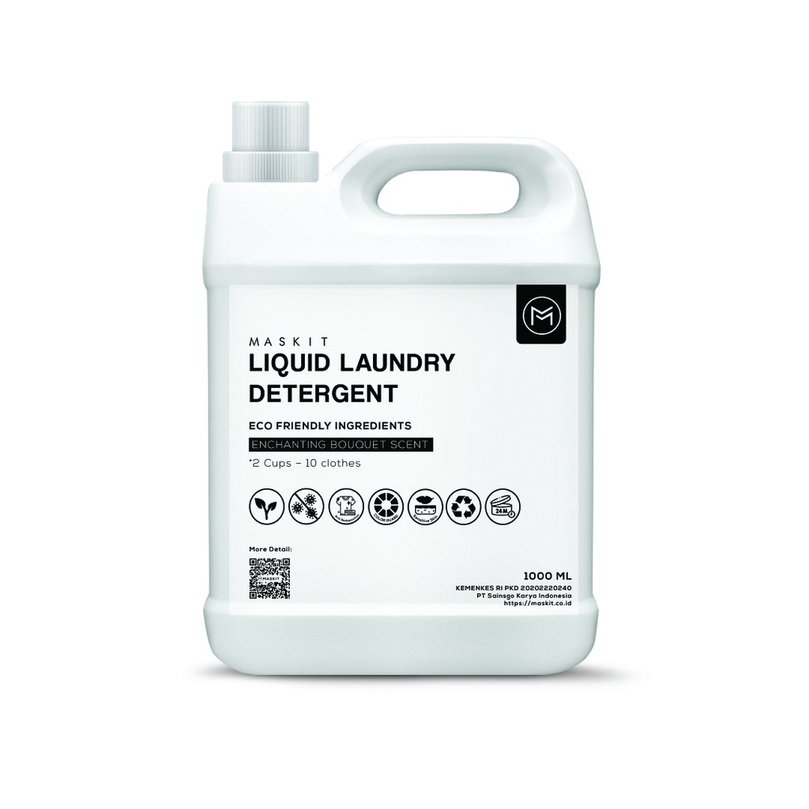

Deterjen Eco-Friendly
Deterjen eco-friendly adalah deterjen yang diformulasikan dengan bahan-bahan biodegradable (mudah terurai di alam) dan bebas dari bahan kimia keras seperti fosfat, paraben, atau pewarna sintetis. Deterjen ini tetap efektif membersihkan noda pada pakaian, namun lebih aman untuk kulit, pernapasan, serta tidak mencemari air dan lingkungan. Dengan aroma alami dari minyak esensial dan kemasan minimal plastik atau berbahan daur ulang, deterjen ini menjadi pilihan tepat untuk kamu yang ingin mencuci pakaian sekaligus menjaga bumi.
Harga: Rp100.000
Checkout Sekarang